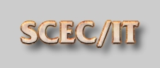

|  |

|
| Information Infrastructure for Earthquake Research | |
Research
This project is a multi-site collaboration to develop an integrated framework for creating, executing, and managing physics-based earthquake simulations required to predict strong ground motions. Working with members of the Southern California Earthquake Center (SCEC), our goal is to provide effective delivery of simulation products to a broad-based user community of geophysicists, civil and structural engineers, city planners, and emergency managers.
This project will develop new techniques for describing, configuring and executing complex computational pathways resulting from the composition of various simulation components. In particular, this project brings together four distinct computer science disciplines:- knowledge representation and reasoning, by ISI's PowerLoom project, to manage the heterogeneity of the simulation models and capture the complex relationships between physical processes, research simulation models, simulation code, and data products
- Grid resource-sharing environments, through ISI's Center for Grid Computing and Globus, to support the execution of simulation scenarios in high performance computing resources
- digital libraries and information management, by UCSD, to manage the collections of data and simulation code repositories as well as multiple versions of the models
- interactive knowledge acquisition, by us, to enable users with a wide range of sophistication to compose multi-step simulations from libraries of simulation codes and data
- interactive tools that enable users that are not geophysics experts to compose and run simulations
- distributed representations using semantic markup languages of earthquake related information
- dynamic planning and execution techniques that will enable users to run simulations in the computational Grid
While we will focus on the application of this new computer science to the challenge problem of seismic hazard analysis, the techniques and integrated modeling framework that will be developed in this project will be directly applicable to many other disciplines.